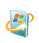
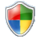
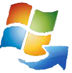

Добро пожаловать в UKRSOFT Corporation
Официальный меморандум проекта
«UKRSOFT Corporation» — это независимое технологическое объединение, сфокусированное на разработке высокопроизводительных операционных систем, специализированного ПО и кроссплатформенных решений нового поколения.
Наш флагманский проект «ОКНА» призван объединить легендарную эргономику и стабильность классических систем с передовыми стандартами безопасности, гибкой кастомизацией и минимальным потреблением системных ресурсов. Мы создаем программную среду, которая работает на пользователя, а не против него.
🎯 Целевое назначение проекта:
Развитие линейки операционных систем, оптимизация серверных комплексов, внедрение неинвазивного ИИ (UKRSOFT AI) и обеспечение учебных и промышленных учреждений универсальным и долговечным софтом.

Информация о проектахФинансирование и Поддержка
Временно недоступно
При желании сделать донат пишите на электронную почту корпорации UKRSOFT: ukrsoft.corporation.ua.it@gmail.com
Центр поддержки и связи
Выберите удобный способ отправки на почту: ukrsoft.corporation.ua.it@gmail.com

Настройки системыКонтакты
Организация: UKRSOFT Corporation
Email технической поддержки: ukrsoft.corporation.ua.it@gmail.com
Email главного инженера и директора корпорации UKRSOFT: maksym.tanasenko.ukrsoft@gmail.com
Официальный домен: ukrsoftcorporation.github.io/ukrsoft-portal/

История и миссия UKRSOFTПомните 2009 год, когда вышла легендарная Windows 7? Многие забыли, но я — нет. В последние годы выживать на Windows 7 становится всё сложнее: браузеры теряют поддержку, современные программы отказываются запускаться, да и сама система имела свои мелкие недоработки, которые порой бесили. Но несмотря на всё это, она остаётся лучшей и самой удобной ОС.
История UKRSOFT началась в 2023 году — именно тогда, когда с Windows 7 начали массово уходить первые ключевые программы. За эти 3 года я перепробовал множество решений, и многие энтузиасты пытались спасти ситуацию, за что им огромное спасибо. Но всё это оставалось временными «костылями».
И тогда я понял: нужно создавать своё... Надеюсь, вы по достоинству оцените этот масштабный проект полностью бесплатного, удобного и надежного ПО!